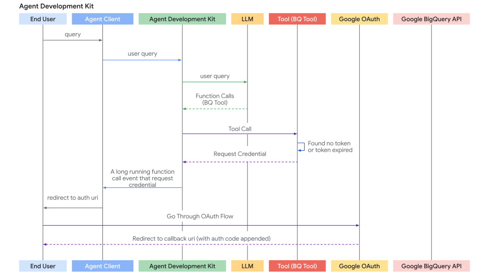
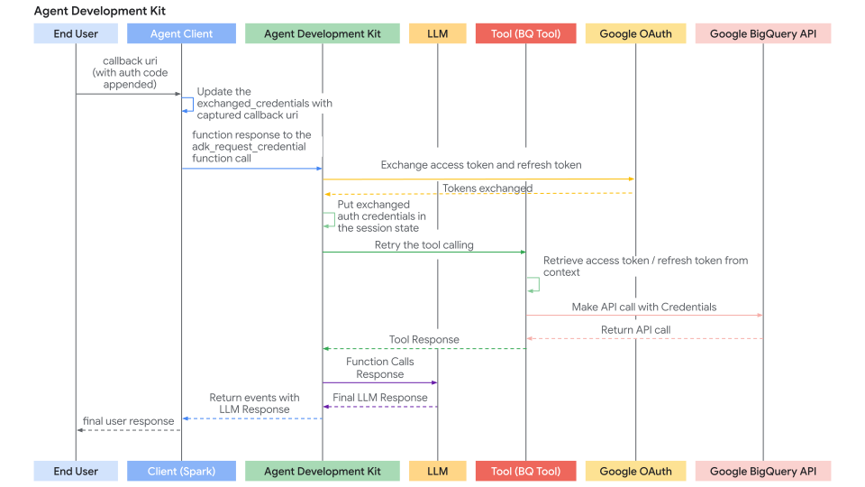

Authenticating with tools¶
The tools and services you use within ADK agents may require access to protected resources, such as user data in email or calendar applications, or sales records in databases. Getting access to these resources typically requires an authentication process that includes credentials and access keys which must be carefully managed and protected. The requirements for managing authentication data can also change if you are running your agent locally or deploying it to a hosted service. If multiple users, with potentially different access permissions, are interacting with the agent, this creates another layer of authentication management requirements.
WARNING: Credential storage and security risks
Storing sensitive credentials such as access tokens and especially refresh tokens directly in the session state can pose security risks depending on your session storage backend, your SessionService implementation, and overall application security posture. Carefully consider how you manage credentials in ADK agents before deploying them for general use.
Authentication and credential management¶
There are several ways to manage authentication and credentials in ADK agents. Each of these methods carries some amount of risk, so you should carefully consider which approach best serves your application and customers.
Recommended: Authentication manager services¶
When deploying agents to production hosted environments, your agent's ability to properly authenticate to restricted tools and services becomes more challenging and more important to properly manage. This authentication challenge can become even more complicated when users of your agent have varying levels of access to restricted tools and data.
Rather than writing code to handle the authentication process and credential management for various tools used by your agent, use an authentication manager service that manages both for you. This service should handle the storage of keys and secrets, as well as the acquisition, management, and storage of OAuth access or refresh tokens. Learn more about Agent Identity integration with ADK.
Self-managed authentication¶
If you decide to manage your own authentication process with ADK helper functions and your own code, consider these recommendations:
- API keys and client secrets: For any API keys and client secrets used
inside ADK code, when running on a local compute environment use a local
.envfile excluded from version control. When your agent is hosted or otherwise in a production environment, use a secrets manager. For more details on secrets managers, see the next section. - Interactive authentication: When using interactive three-legged auth (3LO) OAuth or OpenID Connect (OIDC) for authentication to tools, write a service on the client application to acquire, manage access, and refresh tokens. Make sure to store these tokens against an authenticated user identifier in an encrypted database.
Secrets manager services¶
For production environments, if you are not using an authentication manager service, you should store credentials in a dedicated secret manager service to protect that data. With this approach, a secret manager securely stores the credentials for any tools or services accessed by the agent as needed, and those secrets are not resident in agent's operating memory. For example, a custom ADK Tool using this method would have only short-lived access tokens or secure references in session memory, and retrieve longer-lived refresh tokens from the secrets manager when needed. When selecting a secrets manager, consider services from well-established providers, such as Google Cloud Secret Manager or other secret management services.
Local encrypted secrets storage¶
For agent applications that are less security sensitive, keeping credentials in local, encrypted storage can be a viable option. Consider using dedicated local secrets storage system or encrypting the data in a local database using a robust encryption library, and then managing the encryption keys securely using a key management service. Take care to only keep short-lived access tokens in operating memory and access long-lived credentials and refresh tokens from encrypted local storage only when needed.
In-memory secrets¶
This method should only be used in the early development and testing of your agent. With this approach, credentials are stored in the current InMemorySessionService instance. The data exists only in session memory and is not persisted. However, you should carefully consider the risks of using this method based on how long an agent session may last, who has access to the agent, and the security of the environment where the agent is running.
Framework components¶
Within the ADK framework, the AuthScheme and AuthCredential are the key components for handling authentication methods and managing credential data:
-
AuthScheme: Defines how an API expects authentication credentials, such as an API Key in a header or an OAuth 2.0 Bearer token. ADK supports the same types of authentication schemes as OpenAPI 3.0 and uses specific classes for credential types, including APIKey, HTTPBearer, OAuth2, and OpenIdConnectWithConfig. For more details on each OpenAPI credential type, see OpenAPI doc: Authentication.
-
AuthCredential: Holds the initial information needed to start the authentication process, such as your application's OAuth Client ID or Secret, or an API key value. An instance of this class includes an auth_type, such as
API_KEY,OAUTH2,SERVICE_ACCOUNT, specifying the credential type.
The general authentication flow involves providing these details when configuring a tool. ADK then attempts to automatically exchange the initial credential, such as an access token, before the tool makes an API call. For flows requiring user interaction, including OAuth consent, ADK triggers a specific interactive process with your Agent Client application.
Supported initial credential types¶
- API_KEY: Provides simple key-value authentication, which usually requires no authentication exchange.
- HTTP: Provides Basic Auth which is not recommended and may not be supported for exchange, or already obtained Bearer tokens. Bearer tokens do not require an authentication exchange.
- OAUTH2: Provides standard OAuth 2.0 authentication flows, and requires configuration with client ID, secret, and scopes. This method often triggers an interactive flow for user consent.
- OPEN_ID_CONNECT: Provides authentication based on OpenID Connect. Similar to OAuth2, this type often requires configuration and user interaction.
- SERVICE_ACCOUNT: Provides Google Cloud Service Account credentials as a JSON key or Application Default Credentials. This type typically exchanges a Bearer token.
Tools and integrations quick guide¶
Here is a quick guide to authentication for key ADK toolsets:
- RestApiTool:
Set
auth_schemeandauth_credentialduring initialization - OpenAPIToolset:
Set
auth_schemeandauth_credentialduring initialization - APIHubToolset:
Set
auth_schemeandauth_credentialduring initialization, if the API requires authentication. - ApplicationIntegrationToolset:
Set
auth_schemeandauth_credentialduring initialization, if the API requires authentication. - GoogleApiToolSet: Use this toolset's specific authentication method.
For more authentication details for other pre-built tools and integrations see the ADK Integrations catalog.
Build agentic applications with authenticated tools¶
This section focuses on using pre-existing tools (like those from RestApiTool/ OpenAPIToolset, APIHubToolset, GoogleApiToolSet) that require authentication within your agentic application. Your main responsibility is configuring the tools and handling the client-side part of interactive authentication flows (if required by the tool).
Configure tools with authentication¶
When adding an authenticated tool to your agent, you need to provide its required AuthScheme and your application's initial AuthCredential.
You can configure authentication differently depending on your toolset type, OpenAPI-based or Google API toolsets, and, for services protected by Cloud IAM, whether the service needs an ID token instead of an access token. The following subsections cover each case.
Use OpenAPI-based toolsets (OpenAPIToolset, APIHubToolset, etc.)¶
Pass the scheme and credential during toolset initialization. The toolset applies them to all generated tools. Here are few ways to create tools with authentication in ADK.
Create a tool requiring an API Key.
from google.adk.tools.openapi_tool.auth.auth_helpers import token_to_scheme_credential
from google.adk.tools.openapi_tool.openapi_spec_parser.openapi_toolset import OpenAPIToolset
auth_scheme, auth_credential = token_to_scheme_credential(
"apikey", "query", "apikey", "YOUR_API_KEY_STRING"
)
sample_api_toolset = OpenAPIToolset(
spec_str="...", # Fill this with an OpenAPI spec string
spec_str_type="yaml",
auth_scheme=auth_scheme,
auth_credential=auth_credential,
)
Create a tool requiring OAuth2.
from google.adk.tools.openapi_tool.openapi_spec_parser.openapi_toolset import OpenAPIToolset
from fastapi.openapi.models import OAuth2
from fastapi.openapi.models import OAuthFlowAuthorizationCode
from fastapi.openapi.models import OAuthFlows
from google.adk.auth import AuthCredential
from google.adk.auth import AuthCredentialTypes
from google.adk.auth import OAuth2Auth
auth_scheme = OAuth2(
flows=OAuthFlows(
authorizationCode=OAuthFlowAuthorizationCode(
authorizationUrl="https://accounts.google.com/o/oauth2/auth",
tokenUrl="https://oauth2.googleapis.com/token",
scopes={
"https://www.googleapis.com/auth/calendar": "calendar scope"
},
)
)
)
auth_credential = AuthCredential(
auth_type=AuthCredentialTypes.OAUTH2,
oauth2=OAuth2Auth(
client_id=YOUR_OAUTH_CLIENT_ID,
client_secret=YOUR_OAUTH_CLIENT_SECRET
),
)
calendar_api_toolset = OpenAPIToolset(
spec_str=google_calendar_openapi_spec_str, # Fill this with an openapi spec
spec_str_type='yaml',
auth_scheme=auth_scheme,
auth_credential=auth_credential,
)
Create a tool requiring Service Account.
from google.adk.tools.openapi_tool.auth.auth_helpers import service_account_dict_to_scheme_credential
from google.adk.tools.openapi_tool.openapi_spec_parser.openapi_toolset import OpenAPIToolset
service_account_cred = json.loads(service_account_json_str)
auth_scheme, auth_credential = service_account_dict_to_scheme_credential(
config=service_account_cred,
scopes=["https://www.googleapis.com/auth/cloud-platform"],
)
sample_toolset = OpenAPIToolset(
spec_str=sa_openapi_spec_str, # Fill this with an openapi spec
spec_str_type='json',
auth_scheme=auth_scheme,
auth_credential=auth_credential,
)
Create a tool requiring OpenID connect.
from google.adk.auth.auth_schemes import OpenIdConnectWithConfig
from google.adk.auth.auth_credential import AuthCredential, AuthCredentialTypes, OAuth2Auth
from google.adk.tools.openapi_tool.openapi_spec_parser.openapi_toolset import OpenAPIToolset
auth_scheme = OpenIdConnectWithConfig(
authorization_endpoint=OAUTH2_AUTH_ENDPOINT_URL,
token_endpoint=OAUTH2_TOKEN_ENDPOINT_URL,
scopes=['openid', 'YOUR_OAUTH_SCOPES']
)
auth_credential = AuthCredential(
auth_type=AuthCredentialTypes.OPEN_ID_CONNECT,
oauth2=OAuth2Auth(
client_id="...",
client_secret="...",
)
)
userinfo_toolset = OpenAPIToolset(
spec_str=content, # Fill in an actual spec
spec_str_type='yaml',
auth_scheme=auth_scheme,
auth_credential=auth_credential,
)
Use Google API toolsets (e.g., calendar_tool_set)¶
These toolsets often have dedicated configuration methods.
Tip: For how to create a Google OAuth Client ID & Secret, see this guide: Get your Google API Client ID
# Example: Configuring Google Calendar Tools
from google.adk.tools.google_api_tool import calendar_tool_set
client_id = "YOUR_GOOGLE_OAUTH_CLIENT_ID.apps.googleusercontent.com"
client_secret = "YOUR_GOOGLE_OAUTH_CLIENT_SECRET"
# Use the specific configure method for this toolset type
calendar_tool_set.configure_auth(
client_id=oauth_client_id, client_secret=oauth_client_secret
)
# agent = LlmAgent(..., tools=calendar_tool_set.get_tool('calendar_tool_set'))
Use ID token¶
If your agent calls a restricted service, for example a private Cloud Run or Cloud Function, the agent needs to prove your identity, not just your permissions. If you are calling a service that is accessed using Cloud IAM, you should use an ID token.
-
Access Token (Default): It calls Google APIs (Drive, BigQuery). Think of it as your keycard.
-
ID Token: It calls your own services secured by IAM. Think of it as your passport.
Configuration¶
To implement ID token authentication, configure your ServiceAccount with the following parameters, ensuring you specify the target service's URL as the audience.
from google.adk.auth.auth_credential import ServiceAccount
from google.adk.tools.openapi_tool.auth.auth_helpers import service_account_scheme_credential
from google.adk.tools.openapi_tool.openapi_spec_parser.openapi_toolset import OpenAPIToolset
# Configure the ServiceAccount to use ID token authentication.
# Replace <YOUR_AUDIENCE_URL> with the URL of the service you are calling.
sa_config = ServiceAccount(
use_default_credential=True,
use_id_token=True,
audience="<YOUR_AUDIENCE_URL>",
)
auth_scheme, auth_credential = service_account_scheme_credential(sa_config)
sample_toolset = OpenAPIToolset(
spec_str=sa_openapi_spec_str, # Fill this with an OpenAPI spec
spec_str_type="json",
auth_scheme=auth_scheme,
auth_credential=auth_credential,
)
Troubleshooting authentication errors
If you receive an authentication error, verify that your service account has the 'Cloud Run Invoker' or equivalent role on the target service.
Key takeaways¶
-
Audience Requirement: The
audienceis a security feature that binds the token to a specific destination, preventing it from being "replayed" against other services. -
No Auto-Refresh: Unlike standard OAuth2 access tokens for users, service-account ID tokens are fetched at the time of the request. They do not auto-refresh on a background timer.
-
The Flow: You define the intent and ADK handles the handshake, fetches the token from Google's auth servers, and injects it into your outgoing HTTP headers.
ServiceAccount configuration parameters¶
-
service_account_credential(Optional): Provide the path or dict for your service account JSON key file. Use this if you are running locally or outside of Google Cloud. -
use_default_credential(Optional): Set to True to use Application Default Credentials (ADC). Recommended if your agent is already running within Google Cloud, for example on Cloud Run or Cloud Functions, as it avoids the need for local key files. -
use_id_token(Required for IAM): Set to True to enable ID token-based authentication. This switches the ADK from requesting an Access Token, for Google APIs, to an ID Token, for your own IAM-secured services. -
audience(Required if use_id_token=True): The URL of the service you are calling, for example,https://my-service.run.app. This is a security binding that ensures the token is valid only for that specific destination. -
scopes(Optional): Use it only when requesting Access Tokens for Google Cloud APIs, like Drive or BigQuery. You do not need to set this if you are using ID tokens for private service authentication.
Pair use_id_token with audience
Always use use_id_token=True and audience together. If you provide one without the other, the ADK will raise an error to prevent accidental misconfiguration.
Use external access tokens¶
The external_access_token_key feature allows your agent to use an existing
access token provided by the runtime environment, such as a token provided by
a frontend application, instead of starting a new authentication flow.
When configured, the credential manager skips standard OAuth flows. Instead,
retrieves the key in the agent's tool_context.state and directly uses the
token for authentication.
The use of this configuration parameter is mutually exclusive, and cannot
include credentials, client_id, client_secret, or scopes parameters in the same
configuration block.
Follow this example to configure the key:
from google.adk.auth.auth_credential import AuthCredential
from google.adk.auth.auth_credential import AuthCredentialTypes
# Configure the tool to look for "my_frontend_token" in the session state
credentials_config = AuthCredential(
auth_type=AuthCredentialTypes.GOOGLE_CREDENTIALS,
google_credentials_config={
# Do not hardcode authentication keys in production code
"external_access_token_key": "get_my_frontend_token"
}
)
Authentication request flow¶
This diagram visualizes the end-to-end authentication handshake, tracing the path from the initial user query to the point where the ADK captures a credential request, handles the redirection flow, and retries the tool call once authorized.

Handle the interactive OAuth/OIDC flow (client-side)¶
If a tool requires user login/consent (typically OAuth 2.0 or OIDC), the ADK framework pauses execution and signals your Agent Client application. There are two cases:
- Agent Client application runs the agent directly (via
runner.run_async) in the same process. e.g. UI backend, CLI app, or Spark job etc. - Agent Client application interacts with ADK's fastapi server via
/runor/run_sseendpoint. While ADK's fastapi server could be setup on the same server or different server as Agent Client application
The second case is a special case of first case, because /run or /run_sse endpoint also invokes runner.run_async. The only differences are:
- Whether to call a python function to run the agent (first case) or call a service endpoint to run the agent (second case).
- Whether the result events are in-memory objects (first case) or serialized json string in http response (second case).
Below sections focus on the first case and you should be able to map it to the second case very straightforward. We will also describe some differences to handle for the second case if necessary.
Here's the step-by-step process for your client application:
Step 1: Run Agent & Detect Auth Request
- Initiate the agent interaction using
runner.run_async. - Iterate through the yielded events.
- Look for a specific function call event whose function call has a special name:
adk_request_credential. This event signals that user interaction is needed. You can use helper functions to identify this event and extract necessary information. (For the second case, the logic is similar. You deserialize the event from the http response).
# runner = Runner(...)
# session = await session_service.create_session(...)
# content = types.Content(...) # User's initial query
print("\nRunning agent...")
events_async = runner.run_async(
session_id=session.id, user_id='user', new_message=content
)
auth_request_function_call_id, auth_config = None, None
async for event in events_async:
# Use helper to check for the specific auth request event
if (auth_request_function_call := get_auth_request_function_call(event)):
print("--> Authentication required by agent.")
# Store the ID needed to respond later
if not (auth_request_function_call_id := auth_request_function_call.id):
raise ValueError(f'Cannot get function call id from function call: {auth_request_function_call}')
# Get the AuthConfig containing the auth_uri etc.
auth_config = get_auth_config(auth_request_function_call)
break # Stop processing events for now, need user interaction
if not auth_request_function_call_id:
print("\nAuth not required or agent finished.")
# return # Or handle final response if received
Helper functions helpers.py:
from google.adk.events import Event
from google.adk.auth import AuthConfig # Import necessary type
from google.genai import types
def get_auth_request_function_call(event: Event) -> types.FunctionCall:
# Get the special auth request function call from the event
if not event.content or not event.content.parts:
return
for part in event.content.parts:
if (
part
and part.function_call
and part.function_call.name == 'adk_request_credential'
and event.long_running_tool_ids
and part.function_call.id in event.long_running_tool_ids
):
return part.function_call
def get_auth_config(auth_request_function_call: types.FunctionCall) -> AuthConfig:
# Extracts the AuthConfig object from the arguments of the auth request function call
if not auth_request_function_call.args or not (auth_config := auth_request_function_call.args.get('authConfig')):
raise ValueError(f'Cannot get auth config from function call: {auth_request_function_call}')
if isinstance(auth_config, dict):
auth_config = AuthConfig.model_validate(auth_config)
elif not isinstance(auth_config, AuthConfig):
raise ValueError(f'Cannot get auth config {auth_config} is not an instance of AuthConfig.')
return auth_config
Step 2: Redirect User for Authorization
- Get the authorization URL (
auth_uri) from theauth_configextracted in the previous step. - Crucially, append your application's redirect_uri as a query parameter to this
auth_uri. Thisredirect_urimust be pre-registered with your OAuth provider (e.g., Google Cloud Console, Okta admin panel). - Direct the user to this complete URL (e.g., open it in their browser).
# (Continuing after detecting auth needed)
if auth_request_function_call_id and auth_config:
# Get the base authorization URL from the AuthConfig
base_auth_uri = auth_config.exchanged_auth_credential.oauth2.auth_uri
if base_auth_uri:
redirect_uri = 'http://localhost:8000/callback' # MUST match your OAuth client app config
# Append redirect_uri (use urlencode in production)
auth_request_uri = base_auth_uri + f'&redirect_uri={redirect_uri}'
# Now you need to redirect your end user to this auth_request_uri or ask them to open this auth_request_uri in their browser
# This auth_request_uri should be served by the corresponding auth provider and the end user should login and authorize your application to access their data
# And then the auth provider will redirect the end user to the redirect_uri you provided
# Next step: Get this callback URL from the user (or your web server handler)
else:
print("ERROR: Auth URI not found in auth_config.")
# Handle error
Step 3. Handle the Redirect Callback (Client):
- Your application must have a mechanism (e.g., a web server route at the
redirect_uri) to receive the user after they authorize the application with the provider. - The provider redirects the user to your
redirect_uriand appends anauthorization_code(and potentiallystate,scope) as query parameters to the URL. - Capture the full callback URL from this incoming request.
- (This step happens outside the main agent execution loop, in your web server or equivalent callback handler.)
Step 4. Send Authentication Result Back to ADK (Client):
- Once you have the full callback URL (containing the authorization code), retrieve the
auth_request_function_call_idand theauth_configobject saved in Client Step 1. - Set the captured callback URL in the
exchanged_auth_credential.oauth2.auth_response_urifield. Also ensureexchanged_auth_credential.oauth2.redirect_uricontains the redirect URI you used. - Create a
types.Contentobject containing atypes.Partwith atypes.FunctionResponse.- Set
nameto"adk_request_credential". (Note: This is a special name for ADK to proceed with authentication. Do not use other names.) - Set
idto theauth_request_function_call_idyou saved. - Set
responseto the serialized (e.g.,.model_dump()) updatedAuthConfigobject.
- Set
- Call
runner.run_asyncagain for the same session, passing thisFunctionResponsecontent as thenew_message.
# (Continuing after user interaction)
# Simulate getting the callback URL (e.g., from user paste or web handler)
auth_response_uri = await get_user_input(
f'Paste the full callback URL here:\n> '
)
auth_response_uri = auth_response_uri.strip() # Clean input
if not auth_response_uri:
print("Callback URL not provided. Aborting.")
return
# Update the received AuthConfig with the callback details
auth_config.exchanged_auth_credential.oauth2.auth_response_uri = auth_response_uri
# Also include the redirect_uri used, as the token exchange might need it
auth_config.exchanged_auth_credential.oauth2.redirect_uri = redirect_uri
# Construct the FunctionResponse Content object
auth_content = types.Content(
role='user', # Role can be 'user' when sending a FunctionResponse
parts=[
types.Part(
function_response=types.FunctionResponse(
id=auth_request_function_call_id, # Link to the original request
name='adk_request_credential', # Special framework function name
response=auth_config.model_dump() # Send back the *updated* AuthConfig
)
)
],
)
# --- Resume Execution ---
print("\nSubmitting authentication details back to the agent...")
events_async_after_auth = runner.run_async(
session_id=session.id,
user_id='user',
new_message=auth_content, # Send the FunctionResponse back
)
# --- Process Final Agent Output ---
print("\n--- Agent Response after Authentication ---")
async for event in events_async_after_auth:
# Process events normally, expecting the tool call to succeed now
print(event) # Print the full event for inspection
Note: Authorization response with Resume feature
If your ADK agent workflow is configured with the
Resume feature, you also must include
the Invocation ID (invocation_id) parameter with the authorization
response. The Invocation ID you provide must be the same invocation
that generated the authorization request, otherwise the system
starts a new invocation with the authorization response. If your
agent uses the Resume feature, consider including the Invocation ID
as a parameter with your authorization request, so it can be included
with the authorization response. For more details on using the Resume
feature, see
Resume stopped agents.
Step 5: ADK Handles Token Exchange & Tool Retry and gets Tool result
- ADK receives the
FunctionResponseforadk_request_credential. - It uses the information in the updated
AuthConfig(including the callback URL containing the code) to perform the OAuth token exchange with the provider's token endpoint, obtaining the access token (and possibly refresh token). - ADK internally makes these tokens available by setting them in the session state.
- ADK automatically retries the original tool call (the one that initially failed due to missing auth).
- This time, the tool finds the valid tokens (via
tool_context.get_auth_response()) and successfully executes the authenticated API call. - The agent receives the actual result from the tool and generates its final response to the user.
The sequence diagram of auth response flow, where the Agent Client sends back the auth response and ADK retries the tool, is as follows:

Build custom tools (FunctionTool) requiring authentication¶
This section focuses on implementing the authentication logic inside your custom Python function when creating a new ADK Tool. We will implement a FunctionTool as an example.
Prerequisites¶
Your function signature must include tool_context: ToolContext. ADK automatically injects this object, providing access to state and auth mechanisms.
from google.adk.tools import FunctionTool, ToolContext
from typing import Dict
def my_authenticated_tool_function(param1: str, ..., tool_context: ToolContext) -> dict:
# ... your logic ...
pass
my_tool = FunctionTool(func=my_authenticated_tool_function)
Authentication Logic within the Tool Function¶
Implement the following steps inside your function:
Step 1: Check for Cached & Valid Credentials:
Inside your tool function, first check if valid credentials (e.g., access/refresh tokens) are already stored from a previous run in this session. Credentials for the current sessions should be stored in tool_context.invocation_context.session.state (a dictionary of state) Check existence of existing credentials by checking tool_context.invocation_context.session.state.get(credential_name, None).
from google.oauth2.credentials import Credentials
from google.auth.transport.requests import Request
# Inside your tool function
TOKEN_CACHE_KEY = "my_tool_tokens" # Choose a unique key
SCOPES = ["scope1", "scope2"] # Define required scopes
creds = None
cached_token_info = tool_context.state.get(TOKEN_CACHE_KEY)
if cached_token_info:
try:
creds = Credentials.from_authorized_user_info(cached_token_info, SCOPES)
if not creds.valid and creds.expired and creds.refresh_token:
creds.refresh(Request())
tool_context.state[TOKEN_CACHE_KEY] = json.loads(creds.to_json()) # Update cache
elif not creds.valid:
creds = None # Invalid, needs re-auth
tool_context.state[TOKEN_CACHE_KEY] = None
except Exception as e:
print(f"Error loading/refreshing cached creds: {e}")
creds = None
tool_context.state[TOKEN_CACHE_KEY] = None
if creds and creds.valid:
# Skip to Step 5: Make Authenticated API Call
pass
else:
# Proceed to Step 2...
pass
Step 2: Check for Auth Response from Client
- If Step 1 didn't yield valid credentials, check if the client just completed the interactive flow by calling
exchanged_credential = tool_context.get_auth_response(). - This returns the updated
exchanged_credentialobject sent back by the client (containing the callback URL inauth_response_uri).
# Use auth_scheme and auth_credential configured in the tool.
# exchanged_credential: AuthCredential | None
exchanged_credential = tool_context.get_auth_response(AuthConfig(
auth_scheme=auth_scheme,
raw_auth_credential=auth_credential,
))
# If exchanged_credential is not None, then there is already an exchanged credential from the auth response.
if exchanged_credential:
# ADK exchanged the access token already for us
access_token = exchanged_credential.oauth2.access_token
refresh_token = exchanged_credential.oauth2.refresh_token
creds = Credentials(
token=access_token,
refresh_token=refresh_token,
token_uri=auth_scheme.flows.authorizationCode.tokenUrl,
client_id=auth_credential.oauth2.client_id,
client_secret=auth_credential.oauth2.client_secret,
scopes=list(auth_scheme.flows.authorizationCode.scopes.keys()),
)
# Cache the token in session state and call the API, skip to step 5
Step 3: Initiate Authentication Request
If no valid credentials (Step 1.) and no auth response (Step 2.) are found, the tool needs to start the OAuth flow. Define the AuthScheme and initial AuthCredential and call tool_context.request_credential(). Return a response indicating authorization is needed.
# Use auth_scheme and auth_credential configured in the tool.
tool_context.request_credential(AuthConfig(
auth_scheme=auth_scheme,
raw_auth_credential=auth_credential,
))
return {'pending': true, 'message': 'Awaiting user authentication.'}
# By setting request_credential, ADK detects a pending authentication event. It pauses execution and ask end user to login.
Step 4: Exchange Authorization Code for Tokens
ADK automatically generates oauth authorization URL and presents it to your Agent Client application. your Agent Client application should follow the same way described in Build agentic applications with authenticated tools to redirect the user to the authorization URL (with redirect_uri appended). Once a user completes the login flow, ADK extracts the authentication callback url from Agent Client applications, automatically parses the auth code, and generates auth token. At the next Tool call, tool_context.get_auth_response in step 2 will contain a valid credential to use in subsequent API calls.
Step 5: Cache Obtained Credentials
After successfully obtaining the token from ADK (Step 2) or if the token is still valid (Step 1), immediately store the new Credentials object in tool_context.state (serialized, e.g., as JSON) using your cache key.
# Inside your tool function, after obtaining 'creds' (either refreshed or newly exchanged)
# Cache the new/refreshed tokens
tool_context.state[TOKEN_CACHE_KEY] = json.loads(creds.to_json())
print(f"DEBUG: Cached/updated tokens under key: {TOKEN_CACHE_KEY}")
# Proceed to Step 6 (Make API Call)
Step 6: Make Authenticated API Call
- Once you have a valid
Credentialsobject (credsfrom Step 1 or Step 4), use it to make the actual call to the protected API using the appropriate client library (e.g.,googleapiclient,requests). Pass thecredentials=credsargument. - Include error handling, especially for
HttpError401/403, which might mean the token expired or was revoked between calls. If you get such an error, consider clearing the cached token (tool_context.state.pop(...)) and potentially returning theauth_requiredstatus again to force re-authentication.
# Inside your tool function, using the valid 'creds' object
# Ensure creds is valid before proceeding
if not creds or not creds.valid:
return {"status": "error", "error_message": "Cannot proceed without valid credentials."}
try:
service = build("calendar", "v3", credentials=creds) # Example
api_result = service.events().list(...).execute()
# Proceed to Step 7
except Exception as e:
# Handle API errors (e.g., check for 401/403, maybe clear cache and re-request auth)
print(f"ERROR: API call failed: {e}")
return {"status": "error", "error_message": f"API call failed: {e}"}
Step 7: Return Tool Result
- After a successful API call, process the result into a dictionary format that is useful for the LLM.
- Crucially, include a along with the data.
# Inside your tool function, after successful API call
processed_result = [...] # Process api_result for the LLM
return {"status": "success", "data": processed_result}
Full Code
# Copyright 2026 Google LLC
#
# Licensed under the Apache License, Version 2.0 (the "License");
# you may not use this file except in compliance with the License.
# You may obtain a copy of the License at
#
# http://www.apache.org/licenses/LICENSE-2.0
#
# Unless required by applicable law or agreed to in writing, software
# distributed under the License is distributed on an "AS IS" BASIS,
# WITHOUT WARRANTIES OR CONDITIONS OF ANY KIND, either express or implied.
# See the License for the specific language governing permissions and
# limitations under the License.
import os
from google.adk.auth.auth_schemes import OpenIdConnectWithConfig
from google.adk.auth.auth_credential import AuthCredential, AuthCredentialTypes, OAuth2Auth
from google.adk.tools.openapi_tool.openapi_spec_parser.openapi_toolset import OpenAPIToolset
from google.adk.agents.llm_agent import LlmAgent
# --- Authentication Configuration ---
# This section configures how the agent will handle authentication using OpenID Connect (OIDC),
# often layered on top of OAuth 2.0.
# Define the Authentication Scheme using OpenID Connect.
# This object tells the ADK *how* to perform the OIDC/OAuth2 flow.
# It requires details specific to your Identity Provider (IDP), like Google OAuth, Okta, Auth0, etc.
# Note: Replace the example Okta URLs and credentials with your actual IDP details.
# All following fields are required, and available from your IDP.
auth_scheme = OpenIdConnectWithConfig(
# The URL of the IDP's authorization endpoint where the user is redirected to log in.
authorization_endpoint="https://your-endpoint.okta.com/oauth2/v1/authorize",
# The URL of the IDP's token endpoint where the authorization code is exchanged for tokens.
token_endpoint="https://your-token-endpoint.okta.com/oauth2/v1/token",
# The scopes (permissions) your application requests from the IDP.
# 'openid' is standard for OIDC. 'profile' and 'email' request user profile info.
scopes=['openid', 'profile', "email"]
)
# Define the Authentication Credentials for your specific application.
# This object holds the client identifier and secret that your application uses
# to identify itself to the IDP during the OAuth2 flow.
# !! SECURITY WARNING: Avoid hardcoding secrets in production code. !!
# !! Use environment variables or a secret management system instead. !!
auth_credential = AuthCredential(
auth_type=AuthCredentialTypes.OPEN_ID_CONNECT,
oauth2=OAuth2Auth(
client_id="CLIENT_ID",
client_secret="CLIENT_SECRET",
)
)
# --- Toolset Configuration from OpenAPI Specification ---
# This section defines a sample set of tools the agent can use, configured with Authentication
# from steps above.
# This sample set of tools use endpoints protected by Okta and requires an OpenID Connect flow
# to acquire end user credentials.
with open(os.path.join(os.path.dirname(__file__), 'spec.yaml'), 'r') as f:
spec_content = f.read()
userinfo_toolset = OpenAPIToolset(
spec_str=spec_content,
spec_str_type='yaml',
# ** Crucially, associate the authentication scheme and credentials with these tools. **
# This tells the ADK that the tools require the defined OIDC/OAuth2 flow.
auth_scheme=auth_scheme,
auth_credential=auth_credential,
)
# --- Agent Configuration ---
# Configure and create the main LLM Agent.
root_agent = LlmAgent(
model='gemini-2.0-flash',
name='enterprise_assistant',
instruction='Help user integrate with multiple enterprise systems, including retrieving user information which may require authentication.',
tools=[userinfo_toolset],
)
# --- Ready for Use ---
# The `root_agent` is now configured with tools protected by OIDC/OAuth2 authentication.
# When the agent attempts to use one of these tools, the ADK framework will automatically
# trigger the authentication flow defined by `auth_scheme` and `auth_credential`
# if valid credentials are not already available in the session.
# The subsequent interaction flow would guide the user through the login process and handle
# token exchanging, and automatically attach the exchanged token to the endpoint defined in
# the tool.
import asyncio
from dotenv import load_dotenv
from google.adk.artifacts.in_memory_artifact_service import InMemoryArtifactService
from google.adk.runners import Runner
from google.adk.sessions import InMemorySessionService
from google.genai import types
from .helpers import is_pending_auth_event, get_function_call_id, get_function_call_auth_config, get_user_input
from .tools_and_agent import root_agent
load_dotenv()
agent = root_agent
async def async_main():
"""
Main asynchronous function orchestrating the agent interaction and authentication flow.
"""
# --- Step 1: Service Initialization ---
# Use in-memory services for session and artifact storage (suitable for demos/testing).
session_service = InMemorySessionService()
artifacts_service = InMemoryArtifactService()
# Create a new user session to maintain conversation state.
session = session_service.create_session(
state={}, # Optional state dictionary for session-specific data
app_name='my_app', # Application identifier
user_id='user' # User identifier
)
# --- Step 2: Initial User Query ---
# Define the user's initial request.
query = 'Show me my user info'
print(f"user: {query}")
# Format the query into the Content structure expected by the ADK Runner.
content = types.Content(role='user', parts=[types.Part(text=query)])
# Initialize the ADK Runner
runner = Runner(
app_name='my_app',
agent=agent,
artifact_service=artifacts_service,
session_service=session_service,
)
# --- Step 3: Send Query and Handle Potential Auth Request ---
print("\nRunning agent with initial query...")
events_async = runner.run_async(
session_id=session.id, user_id='user', new_message=content
)
# Variables to store details if an authentication request occurs.
auth_request_event_id, auth_config = None, None
# Iterate through the events generated by the first run.
async for event in events_async:
# Check if this event is the specific 'adk_request_credential' function call.
if is_pending_auth_event(event):
print("--> Authentication required by agent.")
auth_request_event_id = get_function_call_id(event)
auth_config = get_function_call_auth_config(event)
# Once the auth request is found and processed, exit this loop.
# We need to pause execution here to get user input for authentication.
break
# If no authentication request was detected after processing all events, exit.
if not auth_request_event_id or not auth_config:
print("\nAuthentication not required for this query or processing finished.")
return # Exit the main function
# --- Step 4: Manual Authentication Step (Simulated OAuth 2.0 Flow) ---
# This section simulates the user interaction part of an OAuth 2.0 flow.
# In a real web application, this would involve browser redirects.
# Define the Redirect URI. This *must* match one of the URIs registered
# with the OAuth provider for your application. The provider sends the user
# back here after they approve the request.
redirect_uri = 'http://localhost:8000/dev-ui' # Example for local development
# Construct the Authorization URL that the user must visit.
# This typically includes the provider's authorization endpoint URL,
# client ID, requested scopes, response type (e.g., 'code'), and the redirect URI.
# Here, we retrieve the base authorization URI from the AuthConfig provided by ADK
# and append the redirect_uri.
# NOTE: A robust implementation would use urlencode and potentially add state, scope, etc.
auth_request_uri = (
auth_config.exchanged_auth_credential.oauth2.auth_uri
+ f'&redirect_uri={redirect_uri}' # Simple concatenation; ensure correct query param format
)
print("\n--- User Action Required ---")
# Prompt the user to visit the authorization URL, log in, grant permissions,
# and then paste the *full* URL they are redirected back to (which contains the auth code).
auth_response_uri = await get_user_input(
f'1. Please open this URL in your browser to log in:\n {auth_request_uri}\n\n'
f'2. After successful login and authorization, your browser will be redirected.\n'
f' Copy the *entire* URL from the browser\'s address bar.\n\n'
f'3. Paste the copied URL here and press Enter:\n\n> '
)
# --- Step 5: Prepare Authentication Response for the Agent ---
# Update the AuthConfig object with the information gathered from the user.
# The ADK framework needs the full response URI (containing the code)
# and the original redirect URI to complete the OAuth token exchange process internally.
auth_config.exchanged_auth_credential.oauth2.auth_response_uri = auth_response_uri
auth_config.exchanged_auth_credential.oauth2.redirect_uri = redirect_uri
# Construct a FunctionResponse Content object to send back to the agent/runner.
# This response explicitly targets the 'adk_request_credential' function call
# identified earlier by its ID.
auth_content = types.Content(
role='user',
parts=[
types.Part(
function_response=types.FunctionResponse(
# Crucially, link this response to the original request using the saved ID.
id=auth_request_event_id,
# The special name of the function call we are responding to.
name='adk_request_credential',
# The payload containing all necessary authentication details.
response=auth_config.model_dump(),
)
)
],
)
# --- Step 6: Resume Execution with Authentication ---
print("\nSubmitting authentication details back to the agent...")
# Run the agent again, this time providing the `auth_content` (FunctionResponse).
# The ADK Runner intercepts this, processes the 'adk_request_credential' response
# (performs token exchange, stores credentials), and then allows the agent
# to retry the original tool call that required authentication, now succeeding with
# a valid access token embedded.
events_async = runner.run_async(
session_id=session.id,
user_id='user',
new_message=auth_content, # Provide the prepared auth response
)
# Process and print the final events from the agent after authentication is complete.
# This stream now contain the actual result from the tool (e.g., the user info).
print("\n--- Agent Response after Authentication ---")
async for event in events_async:
print(event)
if __name__ == '__main__':
asyncio.run(async_main())
from google.adk.auth import AuthConfig
from google.adk.events import Event
import asyncio
# --- Helper Functions ---
async def get_user_input(prompt: str) -> str:
"""
Asynchronously prompts the user for input in the console.
Uses asyncio's event loop and run_in_executor to avoid blocking the main
asynchronous execution thread while waiting for synchronous `input()`.
Args:
prompt: The message to display to the user.
Returns:
The string entered by the user.
"""
loop = asyncio.get_event_loop()
# Run the blocking `input()` function in a separate thread managed by the executor.
return await loop.run_in_executor(None, input, prompt)
def is_pending_auth_event(event: Event) -> bool:
"""
Checks if an ADK Event represents a request for user authentication credentials.
The ADK framework emits a specific function call ('adk_request_credential')
when a tool requires authentication that hasn't been previously satisfied.
Args:
event: The ADK Event object to inspect.
Returns:
True if the event is an 'adk_request_credential' function call, False otherwise.
"""
# Safely checks nested attributes to avoid errors if event structure is incomplete.
return (
event.content
and event.content.parts
and event.content.parts[0] # Assuming the function call is in the first part
and event.content.parts[0].function_call
# The specific function name indicating an auth request from the ADK framework.
and event.content.parts[0].function_call.name == 'adk_request_credential'
)
def get_function_call_id(event: Event) -> str:
"""
Extracts the unique ID of the function call from an ADK Event.
This ID is crucial for correlating a function *response* back to the specific
function *call* that the agent initiated to request for auth credentials.
Args:
event: The ADK Event object containing the function call.
Returns:
The unique identifier string of the function call.
Raises:
ValueError: If the function call ID cannot be found in the event structure.
(Corrected typo from `contents` to `content` below)
"""
# Navigate through the event structure to find the function call ID.
if (
event
and event.content
and event.content.parts
and event.content.parts[0] # Use content, not contents
and event.content.parts[0].function_call
and event.content.parts[0].function_call.id
):
return event.content.parts[0].function_call.id
# If the ID is missing, raise an error indicating an unexpected event format.
raise ValueError(f'Cannot get function call id from event {event}')
def get_function_call_auth_config(event: Event) -> AuthConfig:
"""
Extracts the authentication configuration details from an 'adk_request_credential' event.
Client should use this AuthConfig to necessary authentication details (like OAuth codes and state)
and sent it back to the ADK to continue OAuth token exchanging.
Args:
event: The ADK Event object containing the 'adk_request_credential' call.
Returns:
An AuthConfig object populated with details from the function call arguments.
Raises:
ValueError: If the 'auth_config' argument cannot be found in the event.
(Corrected typo from `contents` to `content` below)
"""
if (
event
and event.content
and event.content.parts
and event.content.parts[0] # Use content, not contents
and event.content.parts[0].function_call
and event.content.parts[0].function_call.args
and event.content.parts[0].function_call.args.get('auth_config')
):
# Reconstruct the AuthConfig object using the dictionary provided in the arguments.
# The ** operator unpacks the dictionary into keyword arguments for the constructor.
return AuthConfig(
**event.content.parts[0].function_call.args.get('auth_config')
)
raise ValueError(f'Cannot get auth config from event {event}')
openapi: 3.0.1
info:
title: Okta User Info API
version: 1.0.0
description: |-
API to retrieve user profile information based on a valid Okta OIDC Access Token.
Authentication is handled via OpenID Connect with Okta.
contact:
name: API Support
email: support@example.com # Replace with actual contact if available
servers:
- url: <substitute with your server name>
description: Production Environment
paths:
/okta-jwt-user-api:
get:
summary: Get Authenticated User Info
description: |-
Fetches profile details for the user
operationId: getUserInfo
tags:
- User Profile
security:
- okta_oidc:
- openid
- email
- profile
responses:
'200':
description: Successfully retrieved user information.
content:
application/json:
schema:
type: object
properties:
sub:
type: string
description: Subject identifier for the user.
example: "abcdefg"
name:
type: string
description: Full name of the user.
example: "Example LastName"
locale:
type: string
description: User's locale, e.g., en-US or en_US.
example: "en_US"
email:
type: string
format: email
description: User's primary email address.
example: "username@example.com"
preferred_username:
type: string
description: Preferred username of the user (often the email).
example: "username@example.com"
given_name:
type: string
description: Given name (first name) of the user.
example: "Example"
family_name:
type: string
description: Family name (last name) of the user.
example: "LastName"
zoneinfo:
type: string
description: User's timezone, e.g., America/Los_Angeles.
example: "America/Los_Angeles"
updated_at:
type: integer
format: int64 # Using int64 for Unix timestamp
description: Timestamp when the user's profile was last updated (Unix epoch time).
example: 1743617719
email_verified:
type: boolean
description: Indicates if the user's email address has been verified.
example: true
required:
- sub
- name
- locale
- email
- preferred_username
- given_name
- family_name
- zoneinfo
- updated_at
- email_verified
'401':
description: Unauthorized. The provided Bearer token is missing, invalid, or expired.
content:
application/json:
schema:
$ref: '#/components/schemas/Error'
'403':
description: Forbidden. The provided token does not have the required scopes or permissions to access this resource.
content:
application/json:
schema:
$ref: '#/components/schemas/Error'
components:
securitySchemes:
okta_oidc:
type: openIdConnect
description: Authentication via Okta using OpenID Connect. Requires a Bearer Access Token.
openIdConnectUrl: https://your-endpoint.okta.com/.well-known/openid-configuration
schemas:
Error:
type: object
properties:
code:
type: string
description: An error code.
message:
type: string
description: A human-readable error message.
required:
- code
- message